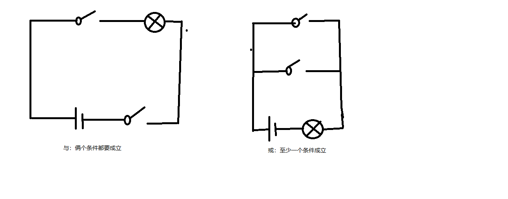

一、JS变量的声明、数据类型和变量的转换
1.js变量声明关键字：var
注意：a：js变量区分大小写；
b：js中字符串可使用双引号，也可使用单引号；
c：js中可声明同名变量，控制台不会报错，但后面变量会覆盖前面的。
2.数据类型分类
a：number（数字类型）
b：string（字符串类型）
c：boolean（布尔类型）
d：null
e：undefined（未定义）
f：object（对象类型）
注:NaN 是数字类型，但其本质不是数字；它与所有值都不相等，包括自己。
3.js变量的转换
a：使用number（）函数将要转换的数据类型转换为数字类型
b：使用boolean（）函数将要转换的数据类型转换为布尔类型
js变量使用注意：
变量名称最好含义明确，以字母或下划线开头，跟上数字字母下划线
a：var age= 12；
b：var test5 ='hello';
c: var _test = 'hello';二、js的三种引入方式 和浏览器javascript支持与否的检测
1.内部引入
<script>
......
</script> 2.外部引入（推荐使用）
<script src="路径" type="text/javascript"></script>3.行内引入
<a href="javascript:confirm('aaa');">666</a>
<p onclick="javascript:alert('hello');">clickme</p>4.检测浏览器是否支持javascript使用方式（一般电脑都会支持）
<noscript>
您的浏览器不支持JavaScript
</noscript>
三、驼峰标记法和下划线法和js 的三种弹框方式
a、驼峰标记法和下划线法
var firstName = 'king'; //小驼峰
var FirstName = 'queen'; //大驼峰
var first_name = 'fyh'; //下划线法
b、js的三种弹框方式
警告弹框：alert（‘ ’）；
确认框： confirm(' ');
提示框：prompt('提示语句'，‘input框’）；
四、js中的运算符
1、算数运算符（+、-、*、/、++、--、%）
<script>
var i=1,j=2;
document.write(i+j); //3
document.write('<br/>');
document.write(i-j); //-1
document.write('<br/>');
document.write(i*j); //2
document.write('<br/>');
document.write(i/j); //0.5
document.write(i%j); //2
document.write('<br/>');
document.write(1%-2); //1
document.write('<br/>');
document.write(-1%2); //-1
document.write('<br/>');
document.write(-2%1); //0
</script>
a:"%"余数运算符，俩个数相除，取余数。
a=10%2; //a=0
b:"++"自增运算符
var a=10;
//赋值后加1；
var b=a++;
//a变量的值赋给b，b=10；然后变量a+1，a=11；
var c=++a;
//将变量a的值+1，a=12；然后将变量a赋值给变量c，c=12；
document.write("b="+b+",c="+c);
c:"- -"自减运算符
var num1=2;
alert(- -num1); //输出num1=1；
//浮点型支持自增自减运算符
num1=12.3；
alert（--num1）； //输出num1=11.3；
注意：字符串类型不支持自增自减运算符
2、赋值运算符（=、+=、-=、*=、/=）
“+=”：先加后等，如a+=5，展开后为a=a+5；
“-=”：先减后等，如a-=5，展开后为a=a-5；
“*=”：先乘后等，如a*=5，展开后为a=a*5；
“/=”：先除后等，如a/=5，展开后为a=a/5；
3、字符串运算符（+）
字符串运算符只作连接符使用，不进行其他运算。
eg：var a='fyh';
var b=a+'666'; //b='fyh'+'666'='fyh666';
4、比较运算符(>、<、>=、<=、==、！=、===、！==)
eg：a=5>6; //a=false;
a=5>=6; //a=false;
"=="，值相比较，值一样返回ture，否则返回flase；
"===",值和类型同时比较，相同返回ture，不同返回flase；
“！==”，不绝对相等，值或类型有一个不相等，或者俩个都不相等；
“===”，绝对相等，值和类型均相等；
5、逻辑运算符（&&、||、！）

&&(与):俩边都成立才返回ture，只要不相同就返回false；
||（或)：a:前面为ture，后边不管是ture或false，都返回前面的值；
b：前面为false，后边不管是ture或false，都返回后边的值；
6、逗号运算符
var a,b,c;
var n=1,m=2;
var z=(x=3,y=4);
console.log(z);//4
console.log(x);//37、三元运算符（三目运算符）(a>b ? 'true' : 'false')
if(3>1){
document.write('aa');
}else{
document.weite('bb');
}
document.write('<br/>');
var res=3>1?'aa':'bb';
document.write(res);
document.write('<br/>');8、void运算符
<script type="text/javascript">
//void运算符
z=void(n=1,m=2,p=3);
alert(z);
//z输出为3
var x;
x=123;
x='king';
x=true;
x=null;
x=undefined;
x=[1,2,3];
alert(typeof x);
//x输出为undefined
</script>
五、null、NaN、" "、undefined比较
1、undefined:未定义类型
var a;
alert(a); //undefined未定义；
2、null(空值)
alert(typeof null); //object
3、NaN(NaN 是数字类型，但其本质不是数字；它与所有值都不相等，包括自己；)
alert(NaN==NaN);//false;
4、 " "
0==" "; //true
0==false; //true
null==undefined; //true
0==undefined； //false
undefined==false; //false
" "==undefined； //false
0==null； //false
null==false; //false
" "==null； //false